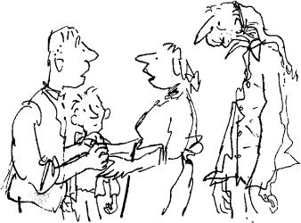

Charlie burst through the front door, shouting, ‘Mother! Mother! Mother!’
Mrs Bucket was in the old grandparents’ room, serving them their evening soup.
‘Mother!’ yelled Charlie, rushing in on them like a hurricane. ‘Look! I’ve got it! Look, Mother, look! The last Golden Ticket! It’s mine! I found some money in the street and I bought two bars of chocolate and the second one had the Golden Ticket and there were crowds of people all around me wanting to see it and the shopkeeper rescued me and I ran all the way home and here I am! IT’s THE FIFTH GOLDEN TICKET, MOTHER, AND I’ VE FOUND IT!’
Mrs Bucket simply stood and stared, while the four old grandparents, who were sitting up in bed balancing bowls of soup on their laps, all dropped their spoons with a clatter and froze against their pillows.
For about ten seconds there was absolute silence in the room. Nobody dared to speak or move. It was a magic moment.
Then, very softly, Grandpa Joe said, ‘You’re pulling our legs, Charlie, aren’t you? You’re having a little joke?’
‘I am not!’ cried Charlie, rushing up to the bed and holding out the large and beautiful Golden Ticket for him to see.
Grandpa Joe leaned forward and took a close look, his nose almost touching the ticket. The others watched him, waiting for the verdict.
Then very slowly, with a slow and marvellous grin spreading all over his face, Grandpa Joe lifted his head and looked straight at Charlie. The colour was rushing to his cheeks, and his eyes were wide open, shining with joy, and in the centre of each eye, right in the very centre, in the black pupil, a little spark of wild excitement was slowly dancing. Then the old man took a deep breath, and suddenly, with no warning whatsoever, an explosion seemed to take place inside him. He threw up his arms and yelled ‘Yippeeeeeeee!’ And at the same time, his long bony body rose up out of the bed and his bowl of soup went flying into the face of Grandma Josephine, and in one fantastic leap, this old fellow of ninety-six and a half, who hadn’t been out of bed these last twenty years, jumped on to the floor and started doing a dance of victory in his pyjamas.
‘Yippeeeeeeeeee!’ he shouted. ‘Three cheers for Charlie! Hip, hip, hooray!’
At this point, the door opened, and Mr Bucket walked into the room. He was cold and tired, and he looked it. All day long, he had been shovelling snow in the streets.
‘Cripes!’ he cried. ‘What’s going on in here?’
It didn’t take them long to tell him what had happened.
‘I don’t believe it!’ he said. ‘It’s not possible.’
‘Show him the ticket, Charlie!’ shouted Grandpa Joe, who was still dancing around the floor like a dervish in his striped pyjamas. ‘Show your father the fifth and last Golden Ticket in the world!’
‘Let me see it, Charlie,’ Mr Bucket said, collapsing into a chair and holding out his hand. Charlie came forward with the precious document.
It was a very beautiful thing, this Golden Ticket, having been made, so it seemed, from a sheet of pure gold hammered out almost to the thinness of paper. On one side of it, printed by some clever method in jet-black letters, was the invitation itself – from Mr Wonka.
‘Read it aloud,’ said Grandpa Joe, climbing back into bed again at last. ‘Let’s all hear exactly what it says.’
Mr Bucket held the lovely Golden Ticket up close to his eyes. His hands were trembling slightly, and he seemed to be overcome by the whole business. He took several deep breaths. Then he cleared his throat, and said, ‘All right, I’ll read it. Here we go:
‘Greetings to you, the lucky finder of this Golden Ticket, from Mr Willy Wonka! I shake you warmly by the hand! Tremendous things are in store for you! Many wonderful surprises await you! For now, I do invite you to come to my factory and be my guest for one whole day – you and all others who are lucky enough to find my Golden Tickets. I, Willy Wonka, will conduct you around the factory myself, showing you everything that there is to see, and afterwards, when it is time to leave, you will be escorted home by a procession of large trucks. These trucks, I can promise you, will be loaded with enough delicious eatables to last you and your entire household for many years. If, at any time thereafter, you should run out of supplies, you have only to come back to the factory and show this Golden Ticket, and I shall be happy to refill your cupboard with whatever you want. In this way, you will be able to keep yourself supplied with tasty morsels for the rest of your life. But this is by no means the most exciting thing that will happen on the day of your visit. I am preparing other surprises that are even more marvellous and more fantastic for you and for all my beloved Golden Ticket holders – mystic and marvellous surprises that will entrance, delight, intrigue, astonish, and perplex you beyond measure. In your wildest dreams you could not imagine that such things could happen to you! Just wait and see! And now, here are your instructions: the day I have chosen for the visit is the first day in the month of February. On this day, and on no other, you must come to the factory gates at ten o’clock sharp in the morning. Don’t be late! And you are allowed to bring with you either one or two members of your own family to look after you and to ensure that you don’t get into mischief. One more thing – be certain to have this ticket with you, otherwise you will not be admitted.
(Signed) Willy Wonka.’
‘The first day of February!’ cried Mrs Bucket. ‘But that’s tomorrow!. Today is the last day of January. I know it is!’
‘Cripes!’ said Mr Bucket. I think you’re right!’
‘You’re just in time!’ shouted Grandpa Joe. ‘There’s not a moment to lose. You must start making preparations at once! Wash your face, comb your hair, scrub your hands, brush your teeth, blow your nose, cut your nails, polish your shoes, iron your shirt, and for heaven’s sake, get all that mud off your pants! You must get ready, my boy! You must get ready for the biggest day of your life!’
‘Now don’t over-excite yourself, Grandpa,’ Mrs Bucket said. ‘And don’t fluster poor Charlie. We must all try to keep very calm. Now the first thing to decide is this who is going to go with Charlie to the factory?’
‘I will!’ shouted Grandpa Joe, leaping out of bed once again. ‘I’ll take him! I’ll look after him! You leave it to me!’
Mrs Bucket smiled at the old man, then she turned to her husband and said, ‘How about you, dear? Don’t you think you ought to go?’
‘Well…’ Mr Bucket said, pausing to think about it, ‘no… I’m not so sure that I should.’
‘But you must.’
‘There’s no must about it, my dear,’ Mr Bucket said gently. ‘Mind you, I’d love to go. It’ll be tremendously exciting. But on the other hand… I believe that the person who really deserves to go most of all is Grandpa Joe himself. He seems to know more about it than we do. Provided, of course, that he feels well enough…’
‘Yippeeeeee!’ shouted Grandpa Joe, seizing Charlie by the hands and dancing round the room.
‘He certainly seems well enough,’ Mrs Bucket said, laughing. ‘Yes… perhaps you’re right after all. Perhaps Grandpa Joe should be the one to go with him. I certainly can’t go myself and leave the other three old people all alone in bed for a whole day.’
‘Hallelujah!’ yelled Grandpa Joe. ‘Praise the Lord!’
At that point, there came a loud knock on the front door. Mr Bucket went to open it, and the next moment, swarms of newspapermen and photographers were pouring into the house. They had tracked down the finder of the fifth Golden Ticket, and now they all wanted to get the full story for the front pages of the morning papers. For several hours, there was complete pandemonium in the little house, and it must have been nearly midnight before Mr Bucket was able to get rid of them so that Charlie could go to bed.